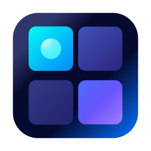

Portfólio
Produtos que enfrentam problemas reais.
Criamos nossas próprias ferramentas e aplicamos o mesmo cuidado técnico em cada projeto de cliente.
Produtos próprios
Construídos, lançados e mantidos pela WPC.
Produtos próprios nos mantêm próximos das decisões reais de arquitetura, suporte e evolução.
Uma biblioteca visual preparada para grandes acervos.
Organização de fotos e vídeos com busca semântica, reconhecimento e IA executada localmente.
Conhecer produto
Final RenamerArquivos organizados em menos etapas.
Renomeação em massa com regras flexíveis, preview e suporte a inteligência artificial local.
Conhecer produtoO que podemos construir com você.
Produtos digitais
Aplicativos, sistemas web e ferramentas desktop do primeiro escopo à publicação.
IA integrada
Busca, agentes, classificação e automações conectadas aos processos do seu negócio.
Experiências interativas
Games, protótipos e interfaces que exigem desempenho e resposta cuidadosa.
Evolução técnica
Modernização de produtos existentes com entregas graduais e risco controlado.
Seu projeto pode ser o próximo.
Conte o problema, o contexto e o resultado que você espera alcançar.
Fale conosco